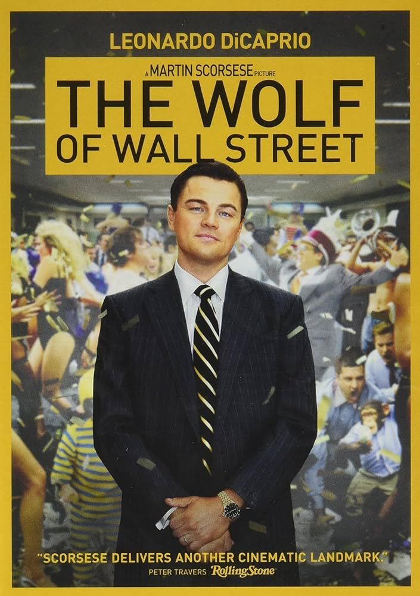

Midnight in Paris

IMDb Rating: 7.7
Genre: Comedy, Fantasy, Romance
Director: Woody Allen
Year: 2011
Description: A screenwriter finds himself mysteriously going back to the 1920s every day at midnight.
Spoiler Alert: He meets famous writers and artists from the past.
The Wolf of Wall Street
IMDb Rating: 8.2
Genre: Biography, Crime, Drama
Director: Martin Scorsese
Year: 2013
Description: Based on the true story of Jordan Belfort's rise and fall on Wall Street.
Spoiler Alert: Belfort's excessive lifestyle leads to his downfall and arrest.
A Clockwork Orange

IMDb Rating: 8.3
Genre: Crime, Drama, Sci-Fi
Director: Stanley Kubrick
Year: 1971
Description: In a dystopian future, a sadistic gang leader is imprisoned and volunteers for a conduct-aversion experiment, but it doesn't go as planned.
Spoiler Alert: The experiment has devastating effects on him.
The Pianist

IMDb Rating: 8.5
Genre: Biography, Drama, Music
Director: Roman Polanski
Year: 2002
Description: A Polish Jewish musician struggles to survive the destruction of the Warsaw ghetto during World War II.
Spoiler Alert: He survives with the help of a sympathetic German officer.
Life Is Beautiful

IMDb Rating: 8.6
Genre: Comedy, Drama, Romance
Director: Roberto Benigni
Year: 1997
Description: When an open-minded Jewish librarian and his son become victims of the Holocaust, he uses a perfect mixture of will, humor, and imagination to protect his son from the dangers around their camp.
Spoiler Alert: He keeps his son hidden and safe until the camp is liberated.
Amadeus

IMDb Rating: 8.4
Genre: Biography, Drama, History
Director: Milos Forman
Year: 1984
Description: The life, success, and troubles of Wolfgang Amadeus Mozart, as told by Antonio Salieri, the contemporaneous composer who was insanely jealous of Mozart's talent and claimed to have murdered him.
Spoiler Alert: Salieri’s jealousy drives him to the brink of madness.
Fantastic Mr. Fox

IMDb Rating: 7.9
Genre: Animation, Adventure, Comedy
Director: Wes Anderson
Year: 2009
Description: An urbane fox cannot resist returning to his farm raiding ways and then must help his community survive the farmers' retaliation.
Spoiler Alert: Mr. Fox outsmarts the farmers and saves his community.
Requiem for a Dream

IMDb Rating: 8.3
Genre: Drama
Director: Darren Aronofsky
Year: 2000
Description: The drug-induced utopias of four Coney Island people are shattered when their addictions run deep.
Spoiler Alert: Their lives spiral out of control in devastating ways.
Eternal Sunshine of the Spotless Mind

IMDb Rating: 8.3
Genre: Drama, Romance, Sci-Fi
Director: Michel Gondry
Year: 2004
Description: When their relationship turns sour, a couple undergoes a medical procedure to have each other erased from their memories.
Spoiler Alert: They meet again and fall in love, despite their efforts to forget each other.